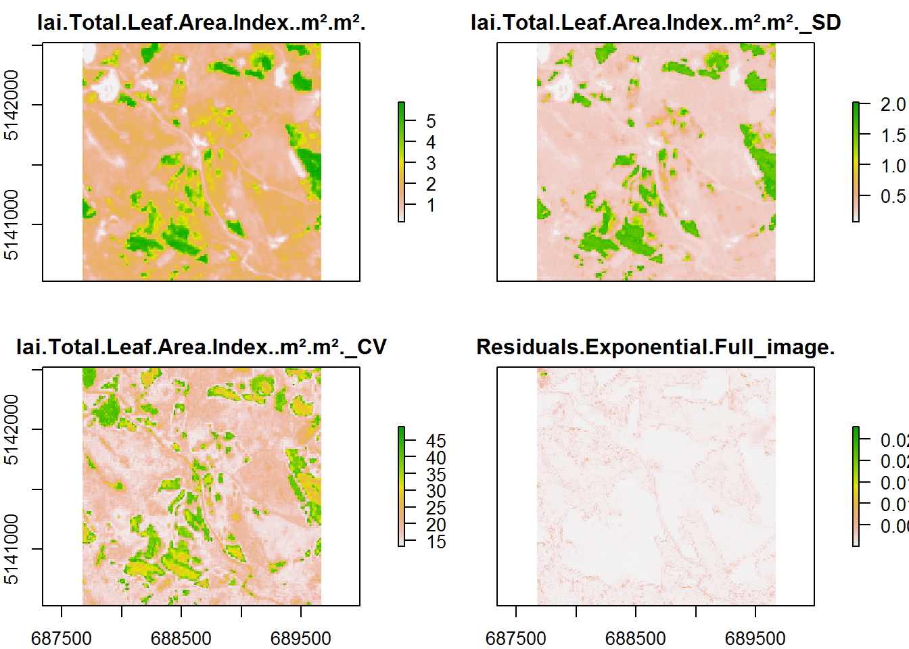
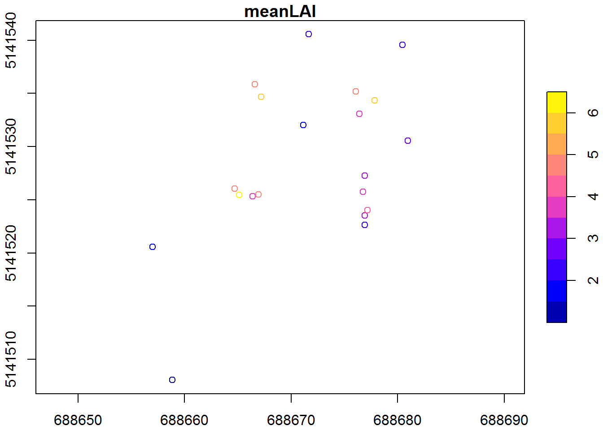
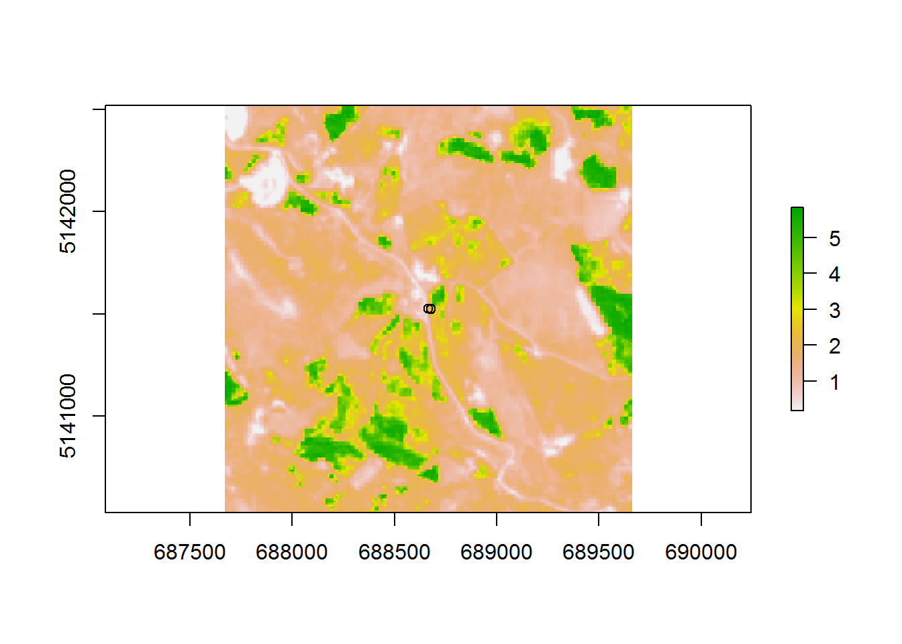
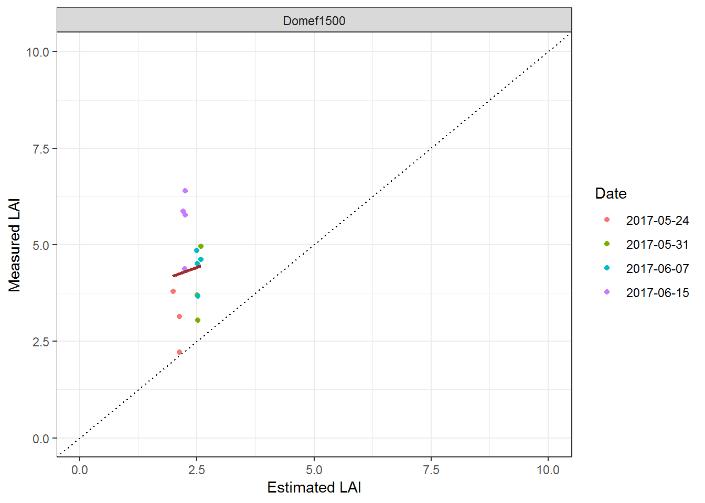

Spatial Link
Mattia Rossi
19 February, 2019
This Tutorial is about linking the ARTMO output with Raster Data in R. ARTMO does not provide a unified workflow on how to store Spatial Rasters and how to join Raster Data and model output.
Therefore the steps for combining Model output and Spatial Data cannot be established automatically but has to be manually linked after each iteration. This Tutorial draws a possible approach for the analysis of combined modelled and spatial data. The following example links the MySQL Table with Raster Files and Shapefiles. The rasters consist of ARTMO Outputs and the Shapefiles have been created a-priori. They are stored as simple Features (sf). This format is recommended since it allows to comprise diverse geometric types (points, shapefiles etc.) and to easily link them to tibbles and data frames.
library("ArtmoR")
library("magrittr")
library("dplyr")
library("purrr")
library("raster")
library("ggplot2")
library("sf")
library("tidyr")1 Link data
In a second step we need the Information about which dataset we are analyzing (MLRA, CF …) as well as the directory we are aiming to
dir<-"C:/ARTMO"
stat<-readRDS("./data/demo.rds") %>%
filter(!map_lgl(Results, is.null))
stat.spat<-spatDir(stat,dir)What we see is that each entry in the Table is provided with a unique Store.ID. This ID is linked to a Model. This allows to connect each iteration with one Model. It is recommended to use this structurization to store the Spatial Files (or basically every other output from ARTMO)in a subfolder with the StoreID. It is highly recommended to STORE the Rasters in the respective folders.
Example. If we want to use both noise = 5 algorithm as the algorithm = Exponential as variables the folder structure should be the following. I fyou want you can use the dircheckup function for creating the folders automatically.
1.1 Create Subdirectory
model.s <-"Model1"
algo.s <-"Exponential"
noise.s <-5
subset<-stat.spat %>% filter(Model==model.s & algorithm==algo.s & noise==noise.s)
folder<-subset$SpatDir
folder## [1] "C:/ARTMO/artmo_1/test_cf/Model1/15/"2 Raster Data
Now we want to see which of the following folders contain raster information. Therefore we parse each of the Location and search for generated Raster
stat.spat.ras<-spatDir(stat,dir,addraster = T)
stat.spat.ras## # A tibble: 4 x 39
## Model Database Project PY_ID Date name_class derivar size_data
## <chr> <chr> <chr> <chr> <chr> <chr> <int> <S3: int>
## 1 Mode~ artmo_1 Mattia1 1 2018~ Full_image 0 1000
## 2 Mode~ artmo_1 Mattia1 1 2018~ Full_image 0 1000
## 3 Mode~ artmo_1 Mattia1 1 2018~ Full_image 0 1000
## 4 Mode~ artmo_1 Mattia1 1 2018~ Full_image 0 1000
## # ... with 31 more variables: estadistico <int>, Spectra <list>,
## # LUT <list>, Name1 <chr>, Name2 <chr>, clave <chr>, param_user <list>,
## # algorithm <chr>, normalizar <int>, sim <S3: integer64>, alfa <dbl>,
## # beta <dbl>, noise <dbl>, train <dbl>, ME <dbl>, RMSE <dbl>,
## # RELRMSE <dbl>, MAE <dbl>, R <dbl>, R2 <dbl>, NRMSE <dbl>, TS <dbl>,
## # NSE <dbl>, tictoc <dbl>, Results <list>, Store.ID <int>,
## # Table_Type <chr>, SpatDir <chr>, RasDir <chr>, RasName <chr>,
## # Rasters <list>Do we really have integrated the Raster in the Table???? -> YES!!
pl<-stat.spat.ras$Rasters[[1]]
plot(pl)
But watch out! It is important to add the Date to the Shapefile
dates<-c("2017-05-24","2017-05-31","2017-06-07","2017-06-15")
stat.spat.ras<-stat.spat.ras %>% dplyr::mutate(AcqDate=as.Date(dates))3 Spatial Data
But we also need to know about the we need to know about the Simple features/ Shapefiles. These help to evaluate the actual performance of the Model and Validate it. A possible SF File could be like the one here below. Since the Simple Features work as a tibble with geographical annotation it is possible to add many different properties such as the date of acquisition, the station, its coordinates or the actual measurement
print(gpsdata,n=5)## Simple feature collection with 20 features and 4 fields
## geometry type: POINT
## dimension: XY
## bbox: xmin: 688657 ymin: 5141508 xmax: 688681 ymax: 5141541
## epsg (SRID): 32632
## proj4string: +proj=utm +zone=32 +datum=WGS84 +units=m +no_defs
## # A tibble: 20 x 5
## Station AcqDate OP1 meanLAI geometry
## <chr> <date> <chr> <dbl> <POINT [m]>
## 1 Domef1500 2017-05-10 ID1 1.52 (688657 5141521)
## 2 Domef1500 2017-05-10 ID2 1.05 (688658.9 5141508)
## 3 Domef1500 2017-05-17 ID1 2.13 (688671.6 5141541)
## 4 Domef1500 2017-05-17 ID2 2.12 (688680.4 5141540)
## 5 Domef1500 2017-05-17 ID3 2.51 (688681 5141531)
## # ... with 15 more rowsplot(gpsdata,axes=T)
plot(gpsdata["meanLAI"],axes=T)
4 Connect Datasets
The Simple Feature is simply added to the Database we generated with the steps a-priori as a new columns. It is again considerated as a nested element
stat.spat.ras.sf<-stat.spat.ras %>%
dplyr::mutate(Features=map(AcqDate,function(x){
gpsdata %>% filter(AcqDate==x) %>% return(.)
}))
stat.spat.ras.sf## # A tibble: 4 x 41
## Model Database Project PY_ID Date name_class derivar size_data
## <chr> <chr> <chr> <chr> <chr> <chr> <int> <S3: int>
## 1 Mode~ artmo_1 Mattia1 1 2018~ Full_image 0 1000
## 2 Mode~ artmo_1 Mattia1 1 2018~ Full_image 0 1000
## 3 Mode~ artmo_1 Mattia1 1 2018~ Full_image 0 1000
## 4 Mode~ artmo_1 Mattia1 1 2018~ Full_image 0 1000
## # ... with 33 more variables: estadistico <int>, Spectra <list>,
## # LUT <list>, Name1 <chr>, Name2 <chr>, clave <chr>, param_user <list>,
## # algorithm <chr>, normalizar <int>, sim <S3: integer64>, alfa <dbl>,
## # beta <dbl>, noise <dbl>, train <dbl>, ME <dbl>, RMSE <dbl>,
## # RELRMSE <dbl>, MAE <dbl>, R <dbl>, R2 <dbl>, NRMSE <dbl>, TS <dbl>,
## # NSE <dbl>, tictoc <dbl>, Results <list>, Store.ID <int>,
## # Table_Type <chr>, SpatDir <chr>, RasDir <chr>, RasName <chr>,
## # Rasters <list>, AcqDate <date>, Features <list>And a plot on how the Shapefiles and the Raster Files are connected now:
ras<-stat.spat.ras.sf$Rasters[[1]][[1]]
shp<-stat.spat.ras.sf$Features[[1]]
plot(ras)
plot(st_geometry(shp),fill="black",add=T)
5 Plot
Now we can use the Raster and Feature from each of the Files to extract the Raster values at the exact same location as the Points are and combine them to the actual measurements in the Spatial Data Frame
measure<-"meanLAI"
result<-spatRes(stat.spat.ras.sf,measuredCol = measure)
print(result)## # A tibble: 4 x 43
## Model Database Project PY_ID Date name_class derivar size_data
## <chr> <chr> <chr> <chr> <chr> <chr> <int> <S3: int>
## 1 Mode~ artmo_1 Mattia1 1 2018~ Full_image 0 1000
## 2 Mode~ artmo_1 Mattia1 1 2018~ Full_image 0 1000
## 3 Mode~ artmo_1 Mattia1 1 2018~ Full_image 0 1000
## 4 Mode~ artmo_1 Mattia1 1 2018~ Full_image 0 1000
## # ... with 35 more variables: estadistico <int>, Spectra <list>,
## # LUT <list>, Name1 <chr>, Name2 <chr>, clave <chr>, param_user <list>,
## # algorithm <chr>, normalizar <int>, sim <S3: integer64>, alfa <dbl>,
## # beta <dbl>, noise <dbl>, train <dbl>, ME <dbl>, RMSE <dbl>,
## # RELRMSE <dbl>, MAE <dbl>, R <dbl>, R2 <dbl>, NRMSE <dbl>, TS <dbl>,
## # NSE <dbl>, tictoc <dbl>, Results <list>, Store.ID <int>,
## # Table_Type <chr>, SpatDir <chr>, RasDir <chr>, RasName <chr>,
## # Rasters <list>, AcqDate <date>, Features <list>, Spat.Result <list>,
## # Spat.Lm <dbl>To finish we compare the Modelled Results to the ones Measured in the Field at a given Location
selection<-result %>%
dplyr::select(RasName,Features,Spat.Result) %>%
unnest %>%
mutate(Date=as.character(AcqDate))
g1<-ggplot(selection,aes(Simulated,Measured,color=Date))+ theme_bw()+
geom_point()+
geom_smooth(method="lm",se=F,col="brown")+
geom_abline(intercept=0,slope=1,linetype="dotted")+
facet_wrap(.~Station,ncol=2)+
xlab("Estimated LAI")+ylab("Measured LAI")+
ylim(c(0,10))+
xlim(c(0,10))
g1
Or make it interactive using the ggplotly package
library("plotly")
ggplotly(g1)